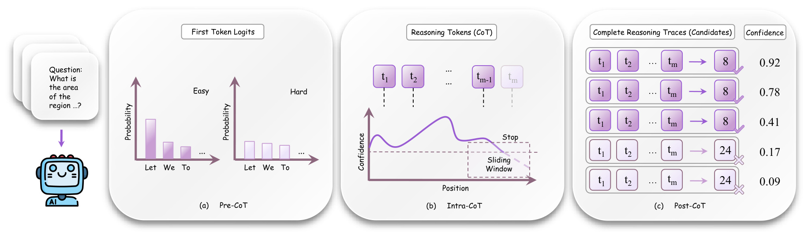
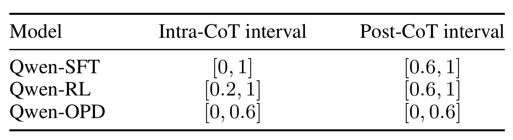
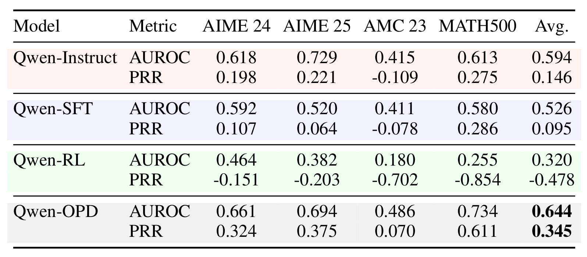
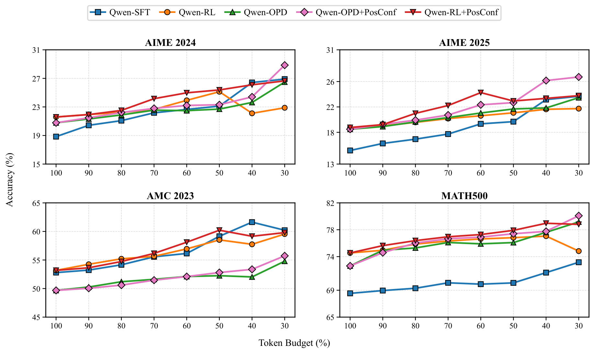
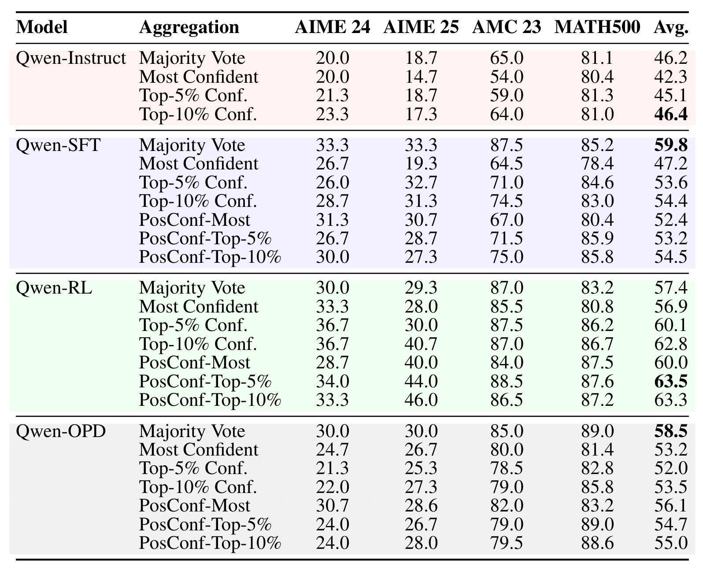
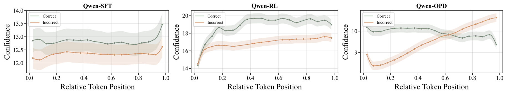
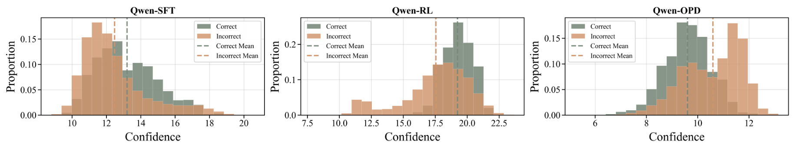
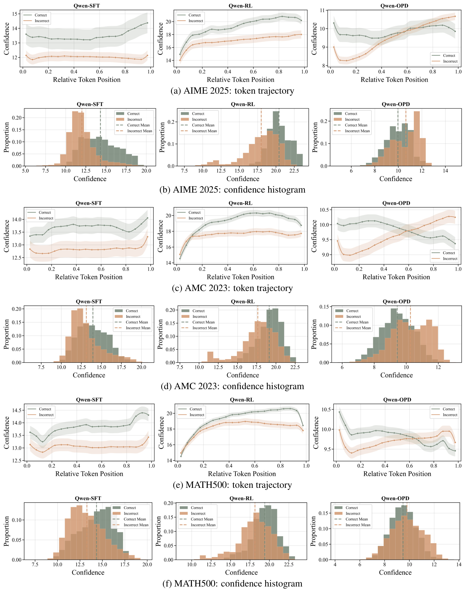

东方理工 PosConf：后训练如何改变推理前、中、后的置信度
这篇论文题为 Post-Training Shifts Confidence: A Three-Stage Analysis of How SFT, RL, and OPD Shape Pre-, Intra-, and Post-CoT Calibration，作者为 Shuhao Li、Guodong Du、Anhao Zhao、Wanyu Lin、Tianyu Yuan 与 Xiaoyu Shen。一作主机构为宁波东方理工，香港理工大学为合作机构。论文于 2026 年 7 月 15 日公开在 arXiv:2607.13753，作者同时开放了官方代码仓库。全文围绕同一个问题展开：SFT、强化学习与在线策略蒸馏不只改变最终答题准确率，也会改变模型在推理轨迹不同阶段“知道自己是否可靠”的方式。
只看最终答案准确率，会把推理模型的置信度压成一个静态标签：它无法回答模型能否在推理前判断题目难度、在推理中识别坏路径、在推理后从多条轨迹中挑出可靠答案，更会掩盖同一条 CoT 内置信度随相对位置发生的方向变化。
1. 背景和问题
推理模型的常见评测单位是“问题是否答对”。在后训练比较中，研究者通常控制模型规模，分别运行 SFT、基于可验证奖励的 RL 或蒸馏，再用单次答案准确率、pass@k 或多数投票准确率判断哪一种训练更好。这些指标能说明模型最终产生正确答案的概率，却无法说明模型内部的概率分布是否能承担推理时决策。例如，一道题在生成开始前看起来容易还是困难，决定了是否应分配更多采样预算；一条轨迹生成到中段时置信度持续下降，可能值得提前停止；同一问题已经采样出多条完整解答后，置信度又可能帮助筛除错误候选。三种使用场景发生在不同时间点，对信号的要求并不相同。
以多数投票为例，投票准确率主要由正确轨迹的基准比例和候选多样性决定。一个模型即使不能识别哪条轨迹正确，只要正确答案在样本中出现得足够频繁，也可能获得很高的投票结果。反过来，一个模型的单次准确率不一定最高，却可能在完成推理后给正确轨迹更高置信度，使候选过滤显著改善最终聚合。类似地，在线早停要求当前局部置信度在生成尚未结束时就具有意义，不能等看到最终答案或最终长度后再回溯判定。把这些任务统称为“校准”会混淆完全不同的决策接口。
论文因此把置信度用途拆成三个阶段。Pre-CoT 发生在第一个推理 token 之前，检验模型能否估计“这道题对自己有多难”；Intra-CoT 发生在生成过程中，检验局部置信度能否识别正在恶化的轨迹并节约 token；Post-CoT 发生在多条轨迹完成以后，检验完整轨迹置信度能否支持候选过滤和答案聚合。这个拆分有一个重要含义：所谓“模型校准得更好”必须附带阶段和决策目标。OPD 可能适合查询路由，SFT 可能适合在线早停，RL 可能适合候选重排，三者并不矛盾。
论文还指出，阶段划分仍然不够。即使都在一条 CoT 内，正确与错误轨迹的置信度关系也会随相对 token 位置变化。SFT 在大部分位置维持相对稳定的正误差距；RL 的前段几乎不可分，模型选择并坚持某条推理路径后才逐渐拉开；OPD 则相反，早段信号较好，后段错误轨迹可能比正确轨迹更自信。若直接对整条轨迹求均值，就会把可靠区间与不可靠甚至反向区间混在一起。一个区间内有用的信号经过全程平均后可能消失，反向区间还会让过滤规则系统性选错。
为了尽量把差异归因于后训练目标，作者采用同一 Qwen2.5-7B-Instruct 骨干，并让 SFT、RL、OPD 使用同一个由 DeepScaler 与 SimpleRL 构成的问题混合。SFT 学习 DeepSeek-R1-Distill-Qwen-32B 产生且最终答案正确的长 CoT；RL 使用可验证的最终答案奖励；OPD 让学生先按当前策略采样，再由教师对这些学生轨迹提供稠密 token 级监督。数据域和模型族固定后，观察到的置信动态更可能来自监督形态，而不是模型尺寸或训练题目完全不同。这个设计仍不能消除所有混杂，例如训练步数、优化器行为和轨迹分布也不同，但比直接横比三个公开模型更接近受控实验。
这项研究的工程价值在于重新组织 test-time compute。生成前的难度信号可用于路由或分配采样数；生成中的信号可用于提前丢弃低质量轨迹；生成后的信号可用于 best-of-N、投票或重排。三者分别影响请求级预算、单轨迹成本和多候选质量。对于推荐系统中的生成式召回、LLM 重排或 Agent 式推荐，也存在同样结构：请求开始前决定是否启用昂贵推理，中途决定是否继续扩展候选解释，完成后决定如何从多个候选列表中聚合。论文真正值得迁移的不是某个固定阈值，而是“先明确置信度服务哪项决策，再验证该位置上的方向是否正确”。
2. 方法
2.1 统一置信度信号与三阶段决策
设输入问题为 \(x\)，标准答案为 \(y\)，提示为 \(P_x\)。模型为同一问题采样 \(N\) 条推理轨迹，记作 \(T_x=\{\tau_i\}_{i=1}^{N}\)；一条轨迹为 \(\tau=(t_1,\ldots,t_m)\)，其中 \(t_\ell\) 是第 \(\ell\) 个生成 token，\(m\) 是完整轨迹长度。论文不额外训练置信预测头，而是直接从下一 token 分布取内部信号。给定位置 \(\ell\) 前的前缀 \(s_\ell=(P_x,t_1,\ldots,t_{\ell-1})\)，选出概率最高的 \(k\) 个候选 token 集合 \(V_k(s_\ell)\)，定义：
符号解释：\(p(v\mid s_\ell)\) 是候选 token \(v\) 在当前前缀下的条件概率，\(V_k(s_\ell)\) 是 top-\(k\) 候选集合，\(k\) 在实验中取 20，\(c_\ell\) 是位置 \(\ell\) 的 token 级置信度。由于高概率 token 的负对数较小，再乘负号后，分布越集中，\(c_\ell\) 越大。它不是“最终答案正确概率”，而是局部 next-token 分布的集中程度；后文所有阶段都在检验这种局部集中是否与实际正确性同向。为了比较长度不同的 CoT，作者进一步把 token 索引归一化成相对位置：
符号解释：\(t\) 是当前 token 索引，\(m\) 是该完整轨迹长度；\(\rho_t\) 接近 0 表示推理起点，接近 1 表示终局答案区域。离线分析可以使用完整长度 \(m\) 对齐轨迹，在线早停则不能偷看未来，因此推理时会用 warmup 轨迹估计期望长度，再构造在线相对位置。

Figure 1 将同一内部信号放进三个不同决策位置。左侧 Pre-CoT 只读取首 token logits，目标不是直接回答，而是判断问题对当前模型偏易还是偏难；中间 Intra-CoT 对已生成 token 做滑窗平滑，局部信号跌破阈值时停止当前轨迹；右侧 Post-CoT 面向已经完成的多条候选，把每条轨迹的置信度与抽取答案一起用于聚合。三个面板也提示了不同成本：Pre-CoT 几乎不产生额外生成，Intra-CoT 直接改变 token 消耗，Post-CoT 则假定候选已生成，主要改变保留和投票。图中右侧相同答案可以对应不同轨迹分数，也提醒聚合检验的是轨迹排序，而不只是答案频数。同一个 \(c_\ell\) 只有在对应阶段与正确性保持合适关系时才有决策价值，不能因为某阶段有效就推断全程有效。
2.2 Pre-CoT：生成前的难度估计
符号解释：\(C_{\mathrm{pre}}(x)\) 是问题 \(x\) 的生成前置信度，\(c_1(P_x)\) 表示预测第一个推理 token 时的 top-\(k\) 概率集中度。该式直接把提示 \(P_x\) 输入统一置信定义，不依赖任何已生成推理内容，因此若信号可靠，可在请求进入昂贵采样前用于预算分配；若信号方向错误，入口路由会在最早阶段放大资源错配。
难度标签不是数据集预先给出的固定 easy/hard，而是模型特定的。作者先为每个模型和问题采样多条轨迹，用多数投票得到答案；投票正确则该问题对这个模型标为 solved，否则标为 unsolved。随后用 AUROC 与 Prediction-Rejection Ratio 检验 \(C_{\mathrm{pre}}\) 能否把 solved 排在 unsolved 前面。这样的标签避免假定 AIME 一定比 MATH500 难，也承认同一题对不同后训练模型的难度不同。代价是标签需要大量离线采样，论文证明的是信号与模型自身可解性的关系，不是零成本获得真实题目难度。
2.3 Intra-CoT：滑动窗口置信度与在线早停
单 token 概率容易受标点、格式、数字和局部词法影响，作者沿用 group-confidence 思路，对最近 \(w\) 个 token 平滑：
符号解释：\(w\) 是滑动窗口大小，\(\ell\) 是当前生成位置，\(c_r\) 是窗口内第 \(r\) 个 token 的置信度，\(G_{\ell,w}\) 是当前局部轨迹的平滑可靠性。标准规则在 \(G_{\ell,w}<\theta\) 时停止该轨迹，被截断轨迹不进入最终答案聚合。若置信度与正确性同向，阈值提高会优先去掉低质量路径，在减少 token 的同时维持或提高剩余答案准确率。
实验不是挑一个阈值报告，而是为每题先生成 32 条 warmup 轨迹，估计轨迹长度、窗口大小和最低置信，再构造 50 个阈值；每个阈值生成 256 条在线样本，最后选择实际保留 token 比例最接近 100%、90% 一直到 30% 的点，形成 matched-budget frontier。自适应窗口约为 warmup 平均长度除以 \(D=10\)。每项实验以五次独立重采样求均值。
在线实现特别处理了未来信息泄漏。离线画轨迹时可以用 \(\rho_t=t/m\)，但早停时当前轨迹还没有最终长度。作者用 warmup 轨迹长度的中位数 \(\hat m_x\) 估计问题级长度，并在生成时计算 \(\hat\rho_t=\min(t/\hat m_x,1)\)。因此“只在 RL 的 20% 以后启动阈值”并非等当前轨迹结束后回看，而是用请求级 warmup 预算近似当前位置。这个方案仍需要额外 32 条 warmup 样本，部署时必须把其成本计入整体系统，不能只统计 256 条在线轨迹节省的 token。
2.4 Post-CoT：完整轨迹过滤与答案聚合
符号解释：\(m\) 是轨迹长度，\(c_t\) 是第 \(t\) 个 token 的内部置信度，\(C_{\mathrm{post}}(\tau)\) 是完整轨迹分数。Post-CoT 假定多条轨迹已经完成，再以全程均值评价每个候选；该式是论文使用的聚合定义，不是额外编号公式。它要求正确轨迹整体得分高于错误轨迹，才适合候选筛选。
作者比较三类策略：标准多数投票使用全部有效答案；Most Confident 只选择分数最高的一条轨迹；Top-5% 或 Top-10% 先按置信度保留最高子集，再对答案聚合。附录说明聚合实验固定使用同一批 256 条轨迹，并做五次独立子采样，所以提升来自“怎样选已生成候选”，而不是某策略偷偷采样更多轨迹。也正因为生成预算固定，Post-CoT 的 6.1 点准确率提升不能解释成推理成本下降；它改善的是相同离线候选池上的选择质量。
2.5 PosConf：只在可靠相对位置区间使用置信度
完整均值的问题是所有位置权重相同。作者根据正确与错误轨迹沿 \(\rho\) 的分离方向，引入位置权重函数 \(w(\rho)\)：
符号解释：\(w(t/m)\) 是相对位置 \(\rho=t/m\) 的权重，\(c_t\) 是局部 token 置信度，\(C_w\) 是只从可靠位置汇总的轨迹分数。当某个位置区间方向正确时权重为正，排除区间可令权重为 0。论文实现使用分段区间而不是学习复杂函数：SFT 和 RL 的 Post-CoT 取尾段，OPD 取前段。
同一原则也用于 Intra-CoT。标准早停从头到尾都应用阈值；PosConf 只有当在线估计位置 \(\hat\rho_t\) 落入模型专属区间 \(I_{\mathrm{intra}}=[\alpha_{\mathrm{intra}},\beta_{\mathrm{intra}}]\) 时才允许停止。对 RL，前段尚未形成可分信号，过早阈值会误杀；对 OPD，后段已经反向，继续用“低置信即停止”会优先保留更自信的错误轨迹，因此阈值只在前 60% 生效。

Table 3 把这种差异变为明确参数。SFT 的 Intra-CoT 区间为 \([0,1]\)，说明局部差距大体全程可用，但 Post-CoT 只取 \([0.6,1]\) 尾段；RL 的 Intra-CoT 从 \([0.2,1]\) 开始，Post-CoT 进一步只取 \([0.6,1]\)，对应先等待路径承诺、再用后段分离；OPD 的 Intra 与 Post 都只取 \([0,0.6]\)，避免曲线交叉后的反校准区。区间由 AIME 2024 的轨迹分析得到，并固定应用到其他数据集，而不是针对每个测试集重新调到最优；因此后续增益也同时检验了粗粒度位置规则的迁移性。PosConf 的核心不是“置信度加权”这个一般概念，而是先检查每种后训练在什么位置仍保持正确方向，再禁止不可靠区间参与决策。
3. 实验结果
3.1 受控设置、生成预算与指标
四个模型均来自 Qwen2.5-7B-Instruct。Qwen-SFT 使用 LlamaFactory 做全参数监督微调，训练目标是教师生成且最终答案正确的长 CoT，截断长度 16384、学习率 \(10^{-6}\)、训练两轮；Qwen-RL 使用 GRPO 和二元答案奖励，最大响应长度 16384，每组 rollout 数为 8，并在 8 张 H20 上训练；Qwen-OPD 先由学生生成轨迹，再让 DeepSeek-R1-Distill-Qwen-32B 在学生访问到的状态上提供稠密 token 级 KL 监督。三者共享问题混合，却接收不同形式的信用分配：SFT 沿正确教师路径做逐 token 拟合，RL 依赖最终结果，OPD 在学生自身轨迹上接受教师分布。
评测覆盖 AIME 2024、AIME 2025、AMC 2023 与 MATH500。每个模型—题目组合以 temperature 0.6、top-p 0.95、最大长度 32768 采样，离线轨迹预算为每题 320 条；除特别说明外，聚合使用固定 256 条，所有主要实验重复五个随机种子。AIME 样本较少且难度高，MATH500 更稳定，因而平均值需要结合逐数据集结果阅读。
AUROC 衡量正确样本是否获得更高分：
符号解释：\(P\) 与 \(N\) 分别是正确和错误样本集合，\(s_i\) 是置信分数，\(a_{ij}\) 在正确样本分数高于错误样本时为 1、相等时为 \(1/2\)。AUROC 低于 0.5 不只是“效果不强”，而是排序方向倾向反了。
选择性预测还使用 PRR。先按置信度从高到低保留前 \(r\) 个样本，记准确率为 \(\mathrm{Acc}(r)\)：
再用随机拒绝和理想排序归一化：
符号解释：\(\mathrm{AUC}_{\mathrm{rank}}\) 是实际置信排序的选择曲线面积，\(\mathrm{AUC}_{\mathrm{rand}}\) 是随机拒绝期望，\(\mathrm{AUC}_{\mathrm{oracle}}\) 是把所有正确样本排在前面的理想面积。PRR 为负意味着按该置信度拒绝样本比随机拒绝更差。
3.2 Pre-CoT：OPD 最适合难度估计

Table 1 显示 OPD 的问题级信号最稳定：平均 AUROC 为 0.644，平均 PRR 为 0.345，均为四模型最高；在 MATH500 上达到 0.734 与 0.611。AIME 2025 的 AUROC 由原始 Qwen-Instruct 以 0.729 领先，但 OPD 的 PRR 仍以 0.375 高于 Instruct 的 0.221，说明它在选择性拒绝的整体曲线上更有用。SFT 平均 AUROC 0.526、PRR 0.095，低于未做额外推理后训练的 Instruct，表明学习正确教师 CoT 并不会自动保留生成前的难度感知。最鲜明的负结果来自 RL：平均 AUROC 0.320、PRR -0.478，四个基准 PRR 全负，MATH500 甚至为 -0.854。也就是说，在 CoT 尚未开始时，RL 的首 token 分布不仅不能稳定区分可解题，按它分配更多预算还可能把资源给错方向。
这一差异与监督形态相容，但论文没有证明严格因果。OPD 在学生自己会访问的轨迹状态上接受稠密教师分布，可能较好保留输入层面的不确定性结构；SFT 只拟合正确教师轨迹，数据筛选会压低“这题可能失败”的表达；RL 奖励在轨迹结束才出现，初始 logits 未必需要编码题目可解性。更稳妥的结论是：在当前骨干、训练配方与数学任务上，OPD 的 Pre-CoT 排序最好，RL 的首 token 信号不宜直接拿来做请求路由。
3.3 Intra-CoT：SFT 最稳定，位置门控修复 RL 与 OPD

Figure 2 的横轴从 100% 走向 30%，表示保留 token 预算越来越少；纵轴是准确率。SFT 的标准置信早停最稳定：AIME 2024 从完整预算的 18.84 提升到 30% 预算的 26.90，AIME 2025 从 15.14 到 23.68；AMC 2023 在 40% 预算达到 61.63，而完整预算是 52.80；MATH500 在 30% 预算从 68.54 到 73.17。这说明 SFT 的局部低置信区间确实常对应坏轨迹，提前截断不仅省 token，还减少了错误路径进入最终答案集合的机会。
RL 也能受益，但阈值过于激进时不稳定。AIME 2024 从 21.59 在 50% 预算升到 25.13，继续压到 30% 又回落至 22.88；MATH500 在 40% 达到 77.06，30% 回落至 74.83。该形态符合“前段尚未分离”的机制：较温和早停多发生在后段，较激进阈值开始误杀尚未完成路径承诺的正确轨迹。PosConf 跳过初始区间后，在 AIME 2024 的 40% 预算把 22.11 提到 26.10，在 MATH500 把 77.06 提到 78.97；AIME 2025 的 60% 预算从 20.61 到 24.26。它不是让 RL 全程更校准，而是禁止不可靠前段触发停止。
OPD 的标准早停在低预算下也有明显收益：30% 预算时，AIME 2024 从 20.78 到 26.49，AIME 2025 从 18.49 到 23.46，MATH500 从 72.62 到 79.17；AMC 2023 到 54.79，仍低于 SFT 与 RL。PosConf 只允许前 60% 位置触发阈值，30% 预算上四个数据集进一步变为 28.85、26.72、55.73 与 80.09。AIME 2025 在 40% 预算的增益为 4.32 点，在 30% 预算为 3.26 点。这里的作用方向与 RL 相反：RL 要避开过早决策，OPD 要避免进入后段反校准后继续按错误方向筛选。
需要注意，曲线上的 token 比例是在线样本的保留预算，前置 32 条 warmup 轨迹仍有成本；阈值也按问题自适应，不是全数据集一个常数。部署若无法为每个请求承担 warmup，可考虑按题型、用户请求簇或历史流量学习区间与阈值，但那属于后续系统设计，论文没有给出零 warmup 方案。
3.4 Post-CoT：RL 的完整轨迹置信度最可用

Table 2 先揭示一个容易误读的事实：多数投票下，SFT 平均 59.8% 最高，OPD 为 58.5%，RL 为 57.4%；但这不代表 SFT 的轨迹置信度最好。SFT 的 Most Confident 只有 47.2%，Top-5% 与 Top-10% 为 53.6% 和 54.4%，均低于多数投票。OPD 更明显，Most Confident、Top-5%、Top-10% 分别为 53.2%、52.0%、53.5%，都低于 58.5%。两者能产生较多正确轨迹，却不能可靠地把正确轨迹排到高置信区域。
RL 的行为相反。Top-10% confidence voting 平均达到 62.8%，相对自己的多数投票提高 5.4 点；AIME 2025 从 29.3% 提到 40.7%，AIME 2024 从 30.0% 提到 36.7%，MATH500 从 83.2% 提到 86.7%。使用 PosConf 尾段分数后，Top-5% 平均达到 63.5%，相对多数投票提高 6.1 点；Top-10% 平均 63.3%，AIME 2025 单项达到 46.0%。这说明 RL 在完整轨迹后形成了可用于候选选择的内部排序，即使其生成前置信度很差。
PosConf 并没有把所有模型都修成优于多数投票。SFT 的 PosConf-Top-10% 平均 54.5%，仍低于 59.8%；OPD 最好的 PosConf-Most 为 56.1%，仍低于 58.5%。因此论文的合理结论不是“位置过滤总有效”，而是当某模型确实存在方向正确的局部区间时，排除错误区域能回收部分信号；如果正确与错误分布本来高度重叠，位置选择也无法凭空创造可分性。把 PosConf 当成通用后处理、直接套到任意模型上，仍可能比多数投票更差。
3.5 位置依赖机制：稳定、延迟分离与后段反校准

Figure 3 给出 PosConf 的机制依据。SFT 中正确轨迹在多数相对位置都高于错误轨迹，间距虽不巨大但方向稳定，接近最终答案时又明显上升；这解释了滑动窗口早停为什么可靠。RL 在最初约 20% 区间中两条曲线几乎重合，随后正确轨迹快速上升并维持更高水平，呈现路径承诺后的延迟分离。OPD 的正确轨迹前段高于错误轨迹，但错误曲线持续上升，约在 60% 附近交叉，后段错误轨迹反而更自信。阴影误差带提示转折不是每条轨迹都发生在同一 token，离散的 0.2/0.6 边界只是稳健近似而非精确相变点。三种曲线不是简单的“高或低”，而是局部方向、分离幅度和转折位置都不同；全程均值会尤其伤害 OPD，因为它把早段正信号和后段反信号相抵。

Figure 4 将逐位置现象投影到完整轨迹分数。SFT 的正确分布均值略高，但两类直方图大面积重叠，所以只留最高 5% 或 10% 会丢掉许多正确候选，无法胜过利用频数的多数投票。RL 的正确轨迹集中在较高置信区，错误轨迹有明显低置信长尾，均值线分离最大，正好满足候选过滤要求。OPD 的错误均值位于正确均值右侧，形成反向校准；按 naive confidence 取 top 子集会主动偏向错误轨迹。两张图共同说明训练目标改变的是“正确性信息在轨迹何处、以什么方向写进 logits”，而不只是把所有概率统一抬高或压低。
SFT 的模式可从逐 token 交叉熵理解：训练沿正确教师轨迹持续约束 next-token 分布，局部波动较稳定，因而适合 Intra-CoT；但拒绝采样只保留正确且风格相似的教师解答，完成轨迹之间可能过于同质，最终分数难以拉开。RL 只从结果奖励获得信用，前段不必显式表达题目难度，但一旦某条行动链与成功奖励相关，后段状态会逐渐形成可分置信。OPD 在学生轨迹上接受教师 token 分布，前段保留了较好的不确定性，却可能在长轨迹后部对学生偏离区域产生过度确定或教师—学生分布错配。论文没有做梯度或因果干预来验证这些解释，因此它们应视为与数据一致的机制假说。
3.6 跨基准复查与证据边界

Figure 5 将轨迹曲线和直方图扩展到三个额外基准。AIME 2025 与 AMC 2023 基本复现三种形态：SFT 正误曲线方向稳定，RL 在早段接近后逐渐拉开，OPD 在中后段出现交叉；对应直方图中 RL 的正确分布更偏高，OPD 的错误分布更容易向高置信侧移动。MATH500 上形态仍同向，但 OPD 的交叉位置和幅度更复杂，RL 两类曲线在终局都出现回落。补充图支持“位置依赖不是 AIME 2024 单图偶然”的判断，却也显示可靠区间未必存在完全固定的自然边界。作者仍用 AIME 2024 导出的离散区间迁移到其他基准，没有报告区间估计方差、跨域自动选择或对边界 0.6/0.2 的敏感性。
证据还受模型和任务范围限制。全部实验是数学推理，且只使用一个 7B 骨干；更大模型、代码推理、开放问答、工具调用或长上下文检索是否保持同样曲线未知。置信度只来自 top-\(k\) token 概率，没有系统比较熵、概率边际、语义一致性、隐藏状态或口头置信。所有模型又共享 Qwen 家族，模型结构本身可能塑造类似轨迹。因而 PosConf 当前更像一条经过受控实验证明的设计原则：对每个模型和任务先做位置校准审计，再选择区间；它还不是可直接跨模型复用的一组永久参数。
4. 总结
4.1 核心结论
论文最重要的结果不是哪种后训练在所有意义上“更自信”，而是三种目标把正确性信息写进了不同阶段。OPD 在 Pre-CoT 的难度排序最好，平均 AUROC/PRR 为 0.644/0.345；SFT 的 Intra-CoT 局部信号最稳定，激进早停仍能保持正向准确率—预算权衡；RL 的 Post-CoT 轨迹分布最可分，PosConf-Top-5% 相对多数投票平均提升 6.1 点。最终答案准确率、局部早停能力和完整轨迹排序能力是三个不同属性，不能用一个分数互相替代。
PosConf 进一步把“阶段依赖”推进到“位置依赖”。SFT 可在大部分生成过程中使用局部置信；RL 需要等待路径承诺，聚合时重点看尾段；OPD 只能信任前段，进入后段后错误轨迹可能更自信。它的操作原则很简单：先画正确/错误轨迹的相对位置曲线，确认信号在何处同向且可分，再让早停或聚合只读取该区间。这个原则比直接平均全轨迹更稳，也比把同一窗口套给所有训练范式更符合数据。
4.2 对推荐与大模型系统的启发
对大模型推理服务，三阶段框架可以直接映射到预算控制。Pre-CoT 信号用于决定是否启用多样采样、外部检索或更大模型；Intra-CoT 信号用于停止明显恶化的 rollout；Post-CoT 信号用于 best-of-N、验证器前置过滤或答案聚合。工程上应分别监控三套校准曲线，而不是只看统一 ECE。尤其是 RL 模型，首 token 置信可能不适合路由，却仍适合完成后的候选筛选；若用同一置信阈值贯穿服务链路，会在入口和出口产生相反效果。
对推荐系统，生成式召回或 LLM reranker 同样可按位置拆解。请求进入时，Pre-CoT 可估计用户意图是否模糊，决定召回路数、历史窗口或是否触发昂贵用户画像；生成候选解释或规划推荐列表时，Intra-CoT 可停止低质量分支；形成多份候选列表后，Post-CoT 可作为聚合或重排特征。更关键的是，后训练方式改变置信信号位置，线上模型从 SFT 迁移到 RL/蒸馏后不能沿用旧阈值。需要在真实流量上按相对生成位置、用户分群和任务类型重新校准，并把节省 token、列表质量与多样性 guardrail 一起评估。
4.3 局限、风险与后续跟进
第一，任务域只有数学推理。数学答案可验证、轨迹终局清晰，开放式推荐解释、代码 Agent 和多工具任务的正确标签更模糊，置信曲线可能不同。第二，实验只有 Qwen2.5-7B-Instruct 一个骨干，不能判断观察来自训练目标还是该模型族与规模。第三，PosConf 区间从 AIME 2024 人工分析得到，边界对数据漂移、题型变化和样本量的敏感性未系统报告。第四，置信度只用 top-20 token 概率集中度；量化、温度、解码策略和服务端 logits 截断都会改变数值。第五，Intra-CoT 依赖 32 条 warmup 轨迹估计长度和阈值，真实低延迟服务中这部分开销可能抵消节省。第六，OPD 后段反校准的训练机制仍是解释性假说，论文没有通过损失消融、教师替换或梯度分析定位根因。
后续最值得做三类复现。其一，在 7B/32B、多模型家族及代码/工具任务上重画位置曲线，检验区间是否随规模和领域移动。其二，将 PosConf 与 entropy、margin、语义一致性和外部 verifier 分数对比，区分“概率集中”与“答案正确”之间的差距。其三，把区间选择从人工读图改为带验证集约束的自动程序，报告边界置信区间，并在分布漂移时触发重新校准。若用于推荐系统，还应增加用户分群、长尾内容、多样性与在线延迟指标，避免只优化最终准确率或 token 成本。整体而言，这篇论文给出了一条可检验的工程纪律：置信度不是模型身上的常数，而是训练目标、决策阶段与轨迹位置共同决定的条件信号。